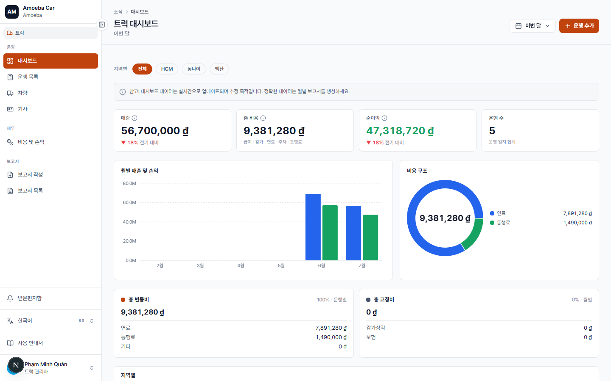
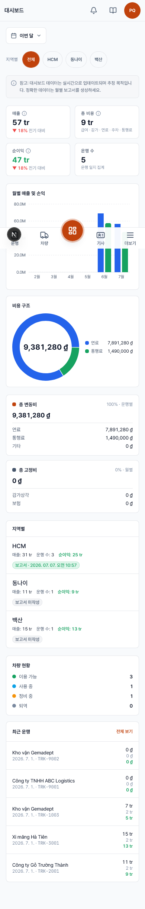

트럭 — 관리자 화면 개요
- 대상
- 트럭 부서 권한이 있는 관리자·매니저
- 기기
- PC(기본) 및 휴대폰 — 모든 페이지 반응형
- 테마
- 주황색 (승용차 부서 파란색과 구분)
트럭 부서는 화물 운송용입니다. 각 운행은 고객·경로·연료·통행료·매출을 담은 운행 일지(LOG)이며, 배차·수락/거절이 있는 승용차와 달리 운행별·지역별 비용 기록·정산에 집중합니다.


트럭 부서 진입
- 트럭 전담 매니저: 로그인 시 바로 진입.
- 관리자(양쪽 부서): 사이드바 상단 승용차 / 트럭 전환 버튼 사용. 관리자만 표시·전환 가능.
- 휴대폰: 메뉴는 하단 탭, 가운데 대시보드 버튼이 돌출.
메뉴 구성
- 운영 — 대시보드 · 운행 일지 · 차량 · 기사
- 재무 — 비용 & 손익 (손익 개요 포함)
- 보고서 — 보고서 작성 · 보고서 목록
- 3개 지역: 각 차량은 HCM / 동나이 / Baiksan 소속; 운행 지역 = 운행 차량의 지역.